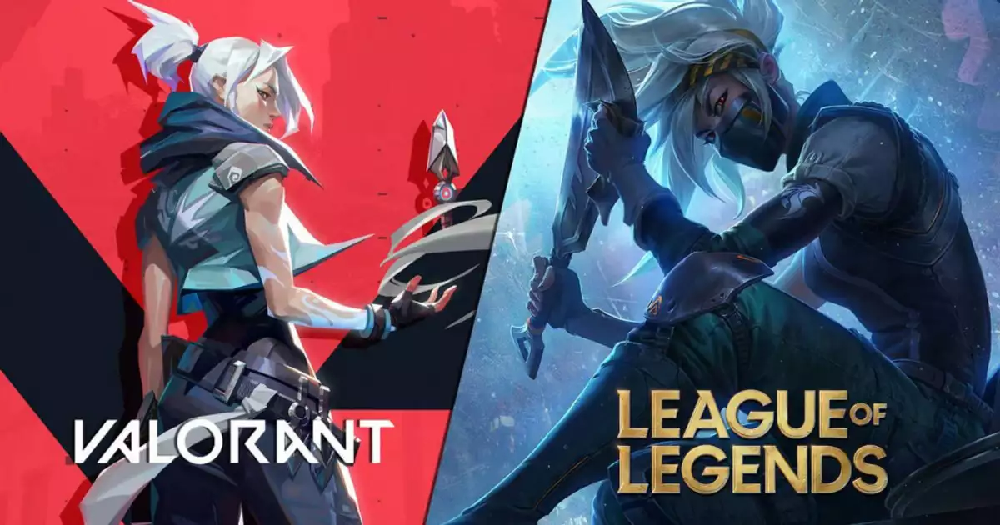

gaming generes :
-
shooting games

Shooter video games or shooters are a subgenre of action video games
where the focus is almost entirely on the defeat of the character's enemies using the weapons given to the player
team fights and how you can outplay your opponnent while mainting a good position -
open world games

An open world is a level or game designed as nonlinear, open areas with many ways to reach an objective. Some games are designed with both traditional and open-world levels.
An open world facilitates greater exploration than a series of smaller levels, or a level with more linear challenges -
team-based strategy and action role playing games
team-based strategy game where two teams of five powerful champions face off to destroy the other
while focusing on good teamfights and communication to achieve tactical objectives that are crucial for winning the game